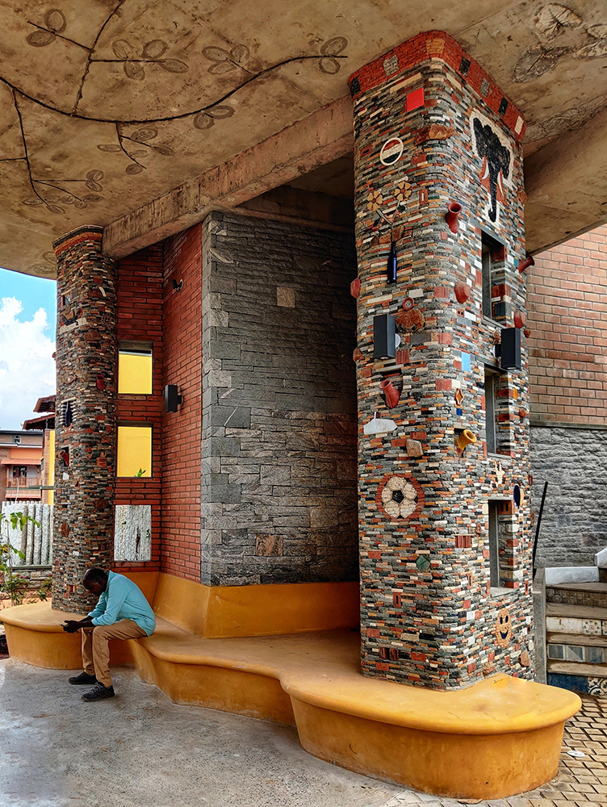
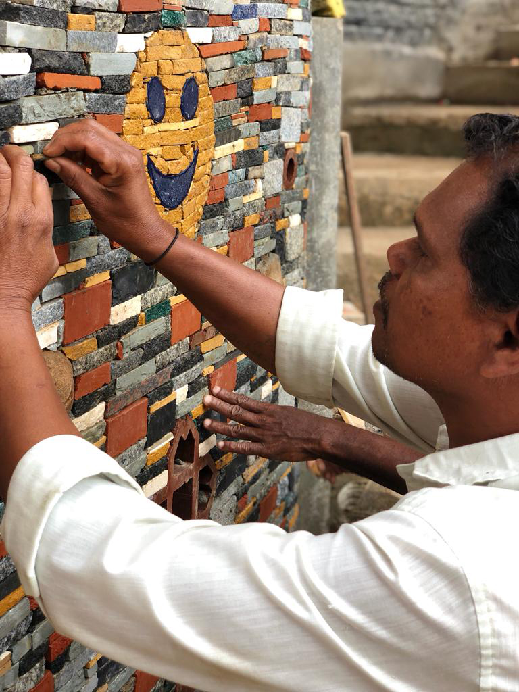
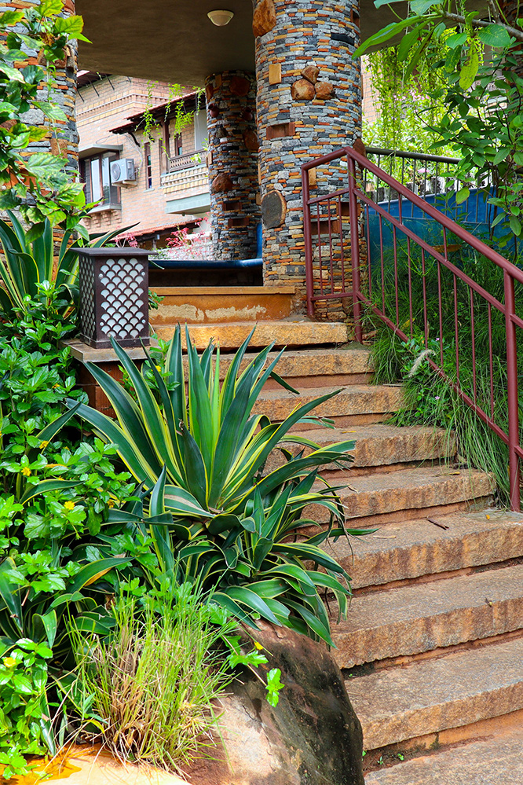
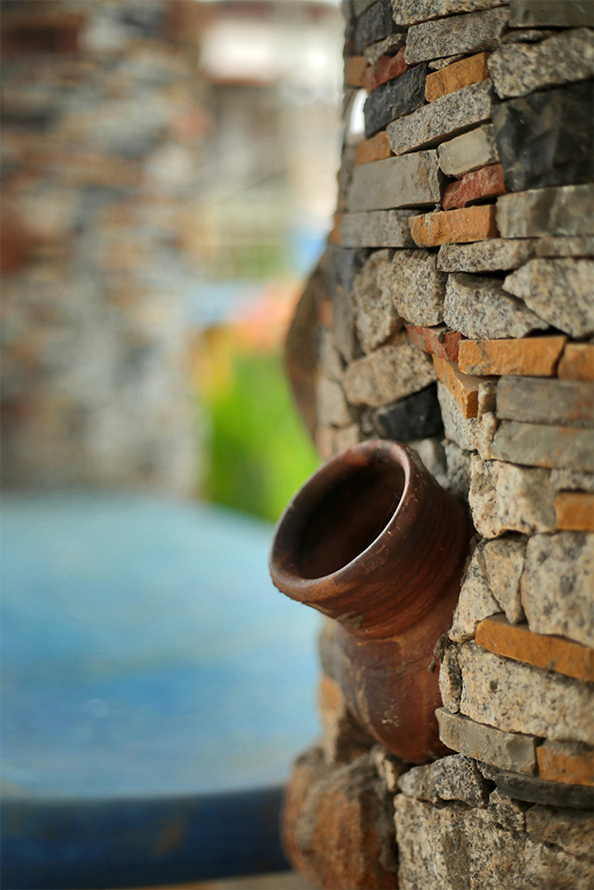
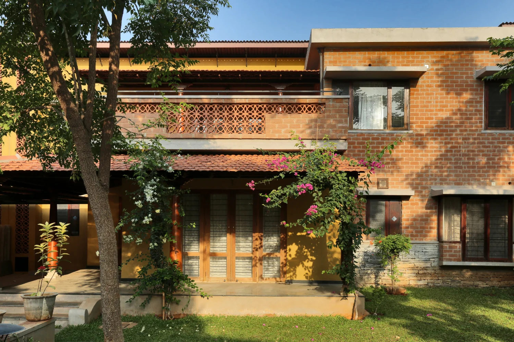
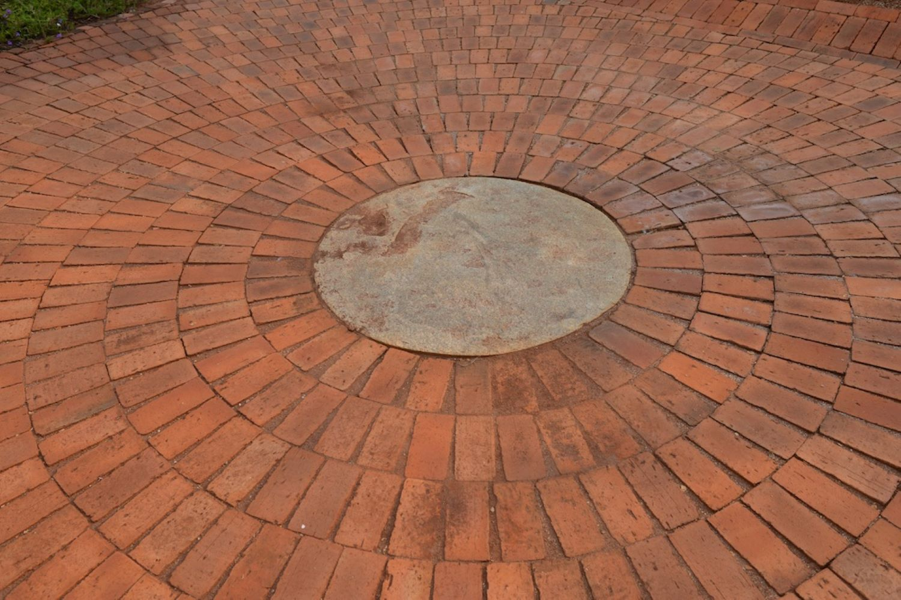

Materials
Materials
This article is a clone from the original GoodEarth Connect catalog. View the original post at:
Eco-friendly creative expression of waste ↗
Stacked Stone Cladding for Walls and Pillars
Eco-friendly creative expression of waste
Stacked Stone Cladding for Walls and Pillars
Eco-friendly creative expression of waste

A sustainable building is characterized by responsible waste management. A waste management strategy would include minimizing waste where possible, eliminating waste when possible, and reusing materials that would otherwise be discarded. Thus, in this blog, let us explore the use of stacked stones for the pillars as a case study of upcycling discarded stone pieces on-site and effectively repurposing them to create a unique expression.
Stacked stone cladding is a type of construction made from discarded or waste stone pieces that are further cut and trimmed to create a consistent shape and size with an approximate width of four inches. These pieces are then placed methodically and glued using cement mortar on a wall or other surface to give the illusion of a solid stone wall. It is commonly used as a decorative finish for walls as accents.
Taking this theme a step further, and incorporating the signature design elements of GoodEarth, the supporting pillars in the gazebo at Mosaic and Medley’s entry pavilion showcase an eclectic fusion of earthen pots, hourdi blocks, ceramics, glass bottles, and terracotta jaalis, all embedded within; which give the impression of a handcrafted 3D mural.
Designing out of waste

“Stacking thousands of pieces of stone by first segregating them according to their colour, and then assembling them up according to their sizes to achieve an appealing, clean look is no ordinary feat. This is accomplished only by a skilled artisan,” says Sandeep, construction manager at GoodEarth.
I realized the true magnitude of this statement after talking to Biju, the craftsman who, along with three others, took over two months to build the magnificent entry pavilion. Biju passionately pointed out some of the fun designs he had created such as a flower vase, penguin, football, and an elephant among many others by careful placement of the desired coloured stones with scrupulous use of a small hammer.
This labour of love strikingly stands out to welcome people into the community as an entry pavilion in Medley and as a charming gazebo in Mosaic with its seating in a vibrant hue of oxide finish.
However, it is the vivid narrative created in its finest details that makes one pause in awe, ponder and truly appreciate the art created out of this pile of junk, which is eco-friendly, sustainable, and a prototype to keep experimenting and be innovative.

Gallery Image

Gallery Image

Gallery Image

Gallery Image

Gallery Image

Gallery Image